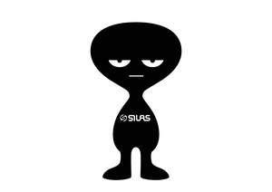

Trade Mark Journal No.2025/048 28 November 2025
UK00004295040 14 November 2025 (14,16,18,25,28)

- Class 14
- Clocks; bracelets [jewelry]; wristwatches; jewelry charms; brooches [jewelry]; chains [jewelry]; necklaces [jewelry]; tie clips; jewelry; rings [jewelry]; works of art of precious metal; hat jewelry; earrings; pins [jewelry]; tie pins; badges of precious metal; key chains [split rings with trinket or decorative fob]; charms for key rings; jewelry for pets.
- Class 16
- Paper; posters; albums; pictures; prints [engravings]; pencils; note books; cards; books; pencil holders; pencil lead holders; drawing instruments; envelopes [stationery]; pen cases; writing materials; photographs [printed]; postcards; printed matter; paper-clips; stationery; fountain pens; bookmarks; calendars; coasters of paper; paper knives [letter openers]; writing instruments; marking pens [stationery].
- Class 18
- Umbrellas; parasols; attache cases; bags for climbers; bags for campers; beach bags; handbags; travelling bags; suitcases; key cases; bags; clothing for pets.
- Class 25
- Caps being headwear; hosiery; boots; half-boots; braces [suspenders] for clothing; suspenders [braces] for clothing; camisoles; boxer shorts; underwear; cap peaks; belts [clothing]; shawls; dressing gowns; pullovers; sweaters; socks; shirts; short-sleeved shirts; clothing; hats; suits; ear muffs [clothing]; neckties; breeches for wear; pants (Am.); outerclothing; gloves [clothing]; scarves; knitwear [clothing]; football shoes; vests; coats; waterproof clothing; leg warmers; skirts; layettes [clothing]; liveries; sports jerseys; cuffs; aprons [clothing]; slippers; pockets for clothing; pajamas; dresses; uniforms; jackets [clothing]; sleep masks; headwear; rash guards.
- Class 28
- Toys; building games; dice; dolls; dolls’ clothes; dolls’ rooms; playing cards; scale model kits [toys]; toy figures; smart toys.
Kabushiki Kaisha B's International Inc.
Representative: Mathys & Squire LLP